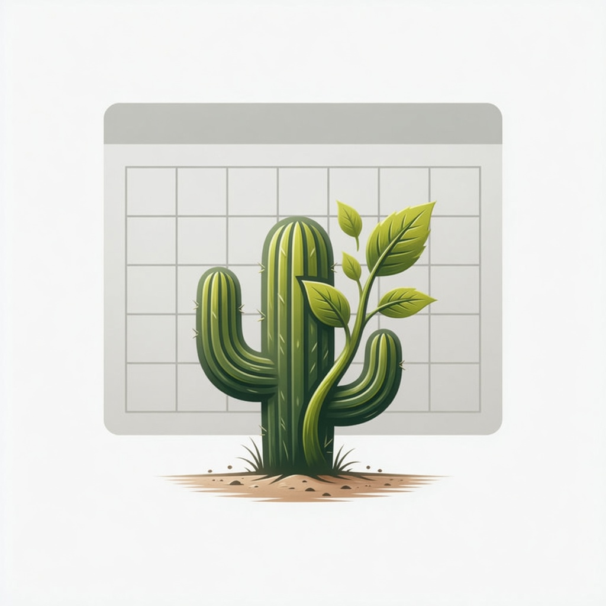
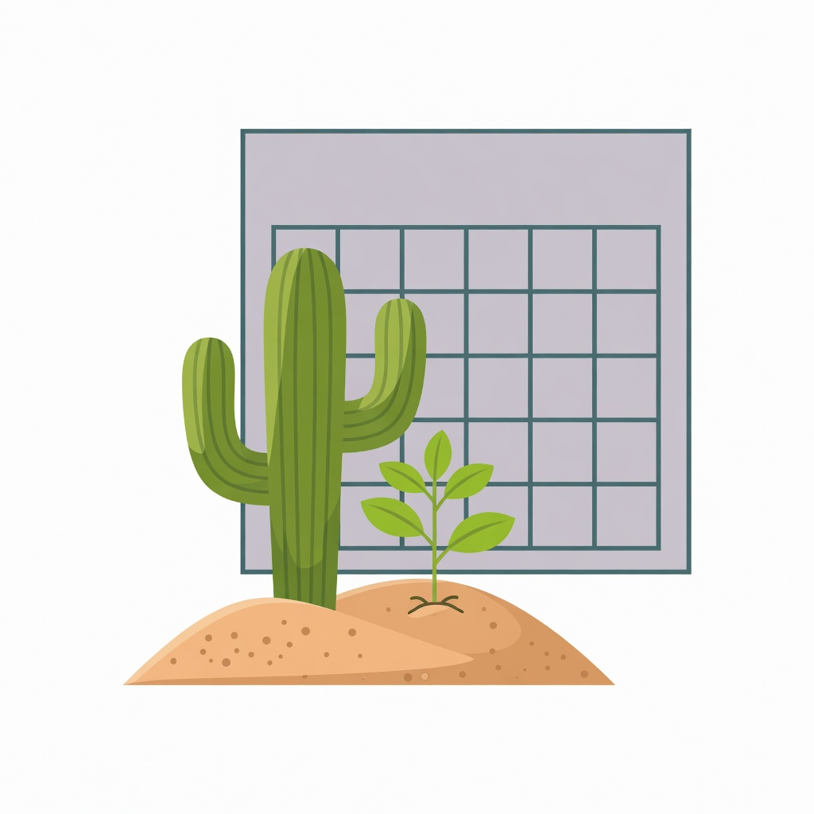
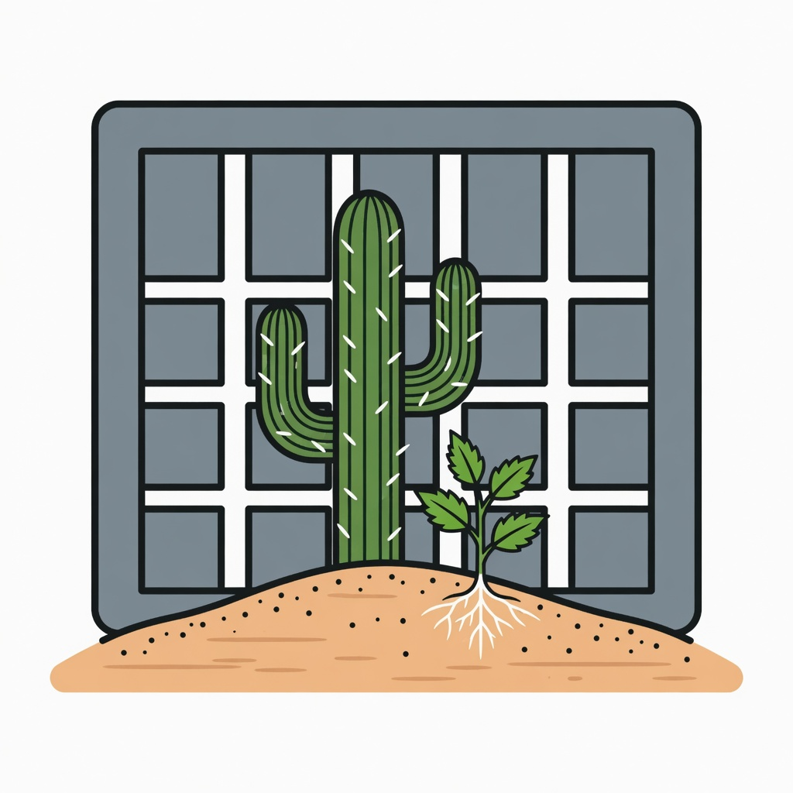
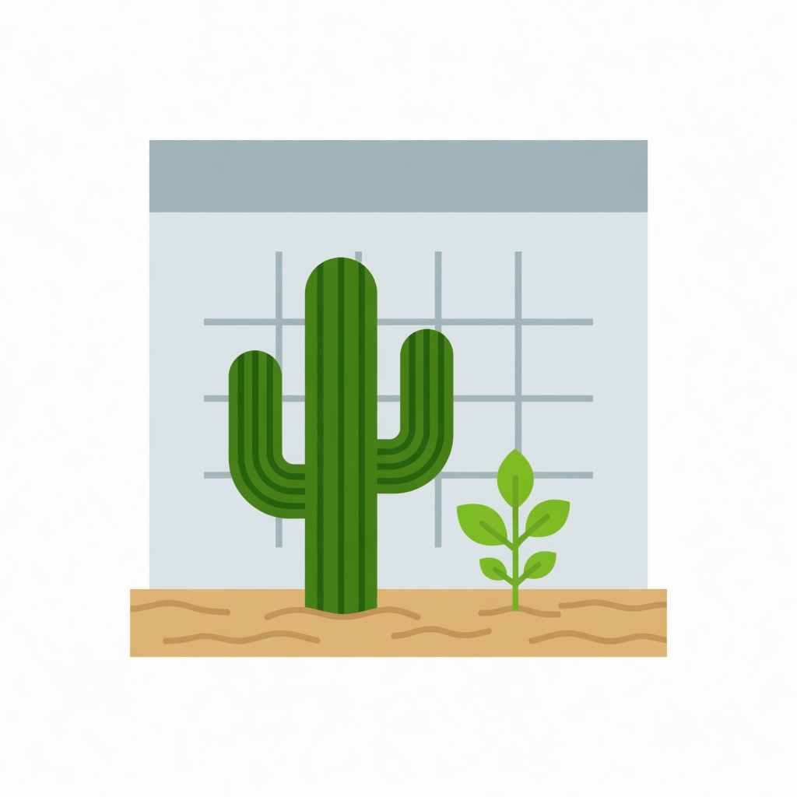
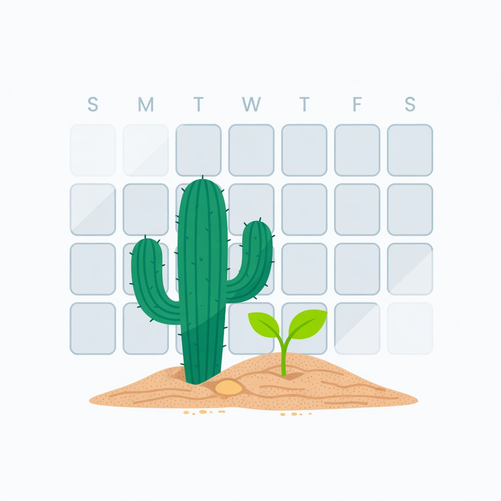

Direction locked from option 01: saguaro + leafy seedling in desert sand. Change: geometric calendar grid sits behind the plants. Each option shown full-size on white, then at 32px on light and dark swatches (favicon read test). Not wired into the app — user picks.




